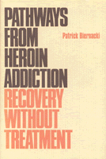

Examines how more than one hundred opiate addicts were able to free themselves without treatment
Examines how more than one hundred opiate addicts were able to free themselves without treatment


 Examines how more than one hundred opiate addicts were able to free themselves without treatment
Examines how more than one hundred opiate addicts were able to free themselves without treatment

|  |
Pathways from Heroin AddictionRecovery Without TreatmentPatrick Biernackicloth EAN: 978-0-87722-410-5 (ISBN: 0-87722-410-2) |
Outstanding Scholarship Award, Society for the Study of Social Problems, 1988
Charles Horton Cooley Award, Society for the Study of Symbolic Interaction, 1987
In this unique and controversial study, Patrick Biernacki contrasts heroin addicts who recovered through treatment facilities with those who overcame their addiction without treatment. A significant contribution to the drug literature, Pathways from Heroin Addiction examines how more than one hundred opiate addicts were able to free themselves from their dependence without undergoing treatment.
After explaining the theoretical framework for the analysis, Dr. Biernacki presents the various stages through which addicts move in resolving to stop using drugs, in breaking away from their habits, and in maintaining abstinence. Especially important in this study is the chapter on "Staying Abstinent." It shows how former addicts were able to manage and overcome their drug cravings, a phenomenon that for years has perplexed drug researchers.
Dr. Biernacki assesses the competing biomedical, sociological, and psychological perspectives of drug addiction and challenges the current treatment philosophy. As the first work which deals exclusively with how addicts can recover without treatment, Pathways from Heroin Addiction makes a unique and important contribution to the literature on drug abuse and will be of broad interest, especially to those in treatment facilities.
Patrick Biernacki is a Research Sociologist with Biernacki and Associates in San Francisco. He was previously on the faculty of San Francisco State University and Executive Director of Social Research Associates of California.
Health and Health Policy
Political Science and Public Policy
Health, Society, and Policy, edited by Sheryl Ruzek and Irving Kenneth Zola.
No longer active.
Health, Society and Policy, edited by Sheryl Ruzek and Irving Kenneth Zola, takes a critical stance with regard to health policy and medical practice, ranging broadly in subject matter. Backlist titles include books on the legal and professional status of midwifery, the experience and regulation of kidney transplants, the evolution of federal law on architectural access, and a political/ethical argument for making the community responsible for universal access to health care.
© 2015 Temple University. All Rights Reserved. This page: http://www.temple.edu/tempress/titles/392_reg.html.